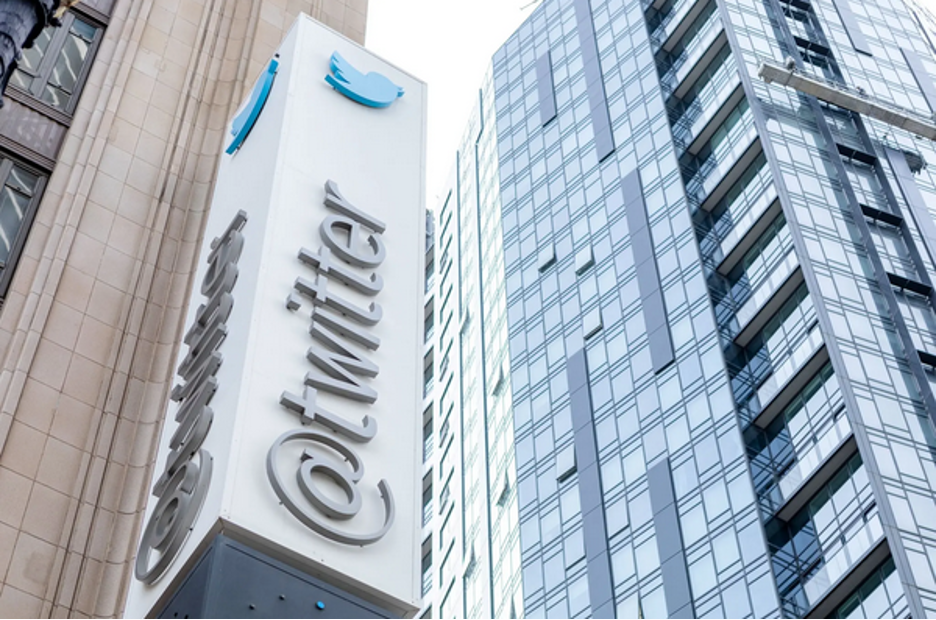

Now that Elon Musk has completed his $44 billion deal for Twitter, let's walk through the math of owning the social media company.
It's not just an academic exercise. Mr. Musk's ability to make the numbers work will have a direct impact on the health of a service called the world's town square, determining what direction he takes the business and the platform. If the financial case is grim, any plans to invest in Twitter may have to take a back seat to simply paying the bills.
